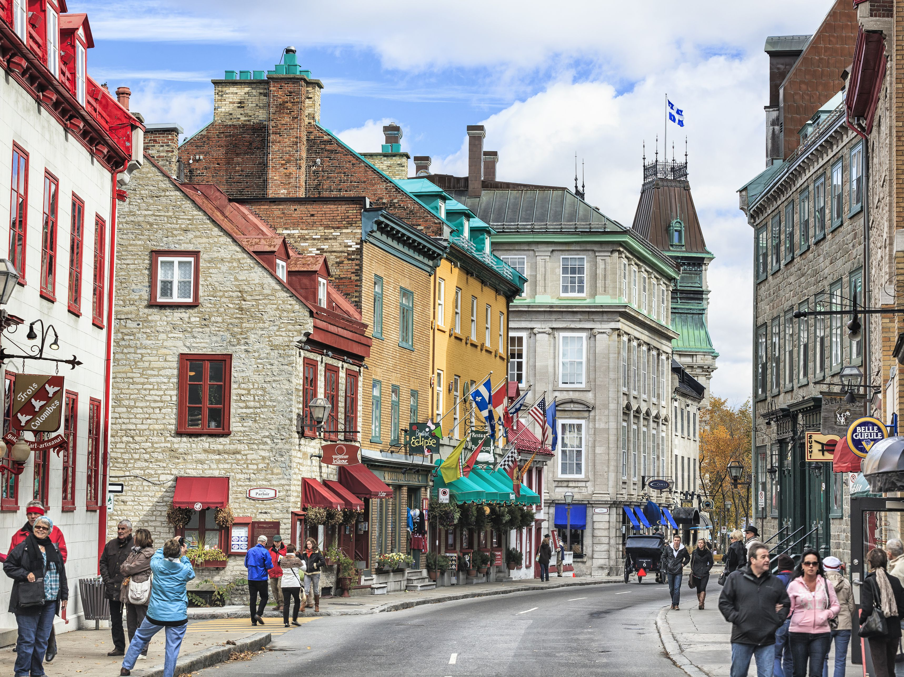

Travel Experiences
What may be known as one of the flattest Canadian provinces, is actually hiding secrets of its own! There is actual elevation here, especially at the celebrated Riding Mountain National Park which is located at a whopping altitude of 756 meters above sea level. This is the main reason that has contributed to transforming this park into a desirable destination to mountain bike. Apart from the adventurous trails, riders can revel in the glorious view that comes from the being at the top of the 65-million-year-old Manitoba Escarpment. However, one advice is to keep an eye open at all times for moose and elk, especially during early morning or at dusk. If you are looking for an easy trail, the Lakeshore Trail is a recommended option or if you like things tougher, you can opt for the challenging Clear Lake Trail.
Traveller Experiences
There is a high chance that Ontario was anyway a part of your travel itinerary to Canada and hence, we have just made things easier by telling you one of the most adventurous things to do in Canada which is located right in the middle of Ontario! Ontario is known for one of the largest and best national parks—Pukaskwa which is home to the Coastal Hiking Trail that traces the wildest shore on all the Great Lakes for some 60 crazy kilometers making it one of the best adventure places in Canada. As you tread across rock cairns along empty pebble beaches, you will reach serene woodland, scramble over steep shoreline rocks and look in amazement at expansive views of Lake Superior. It is one of the better-manicured campsites with many suspension bridges along the way, making the entire experience easier.
Elizabeth Weaver • Submitted 24 Oct 2019 PASSAGE TO INDIA - 14 DAYS

Traveller Experiences
Before we talk about Quebec, we want to ask you if you’ve ever heard of what snow tagging is! If you have not, we should tell you that snow tagging is. A breathtaking experience, this is where the magical and the outdoor come together to provide the craziest fitness platform that there is. Head to La Maurice National Park, where winter looks stunning after a bout of fresh snowfall and elaborate snow designs are carved out in a few hours to make it a breathtaking experience. Use a GPS, compass, ropes or go free-form, relying on the drawings that are available at the park office. After finishing your creative stint, head to a high hike point and take a look at all the stunning creations to admire at the artistic streak that is present within each one of us.
Miranda Huntley • Submitted 16 Mar 2020 AMRITSAR & THE GOLDEN TRIANGLE - 13 DAYS